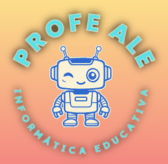
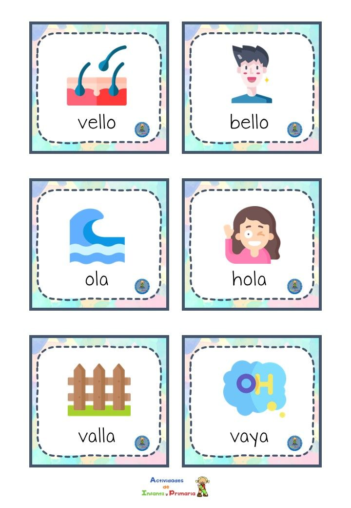
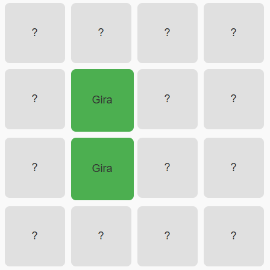
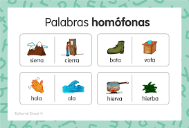
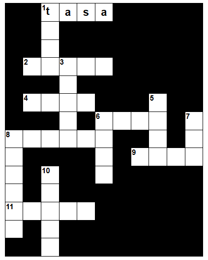

¿Sabías qué?
Las palabras homófonas suenan igual, pero, su escritura y su significado son diferentes.
Según Sánchez et al.(2024) El aprendizaje de palabras homófonas es crucial en la enseñanza de la ortografía,
ya que estas palabras, que suenan de la misma forma, pero tienen diferentes significados y ortografía,
pueden generar confusiones en la escritura.
¡Aprendamos a diferenciarlas!

¿Sabías qué?
Si conocemos bien qué son las palabras homófonas,
aprenderemos a escribir mejor y descubriremos todo un mundo
de conocimiento.
Según un estudio, las palabras homófonas representan aproximadamente el 10% de las palabras en español,
lo que significa que un dominio adecuado de estas palabras
puede mejorar significativamente las habilidades ortográficas de los alumnos. Sánchez et al.(2024)
En esta página, aprenderás a diferenciar palabras que
suenan igual, pero, su escritura y significado es diferente.
A continuación podrás ver un video, que te ayudará a aprender más.
A continuación veremos una actividad llamada "juego de memoria"
Realízala y practica lo que hemos aprendido hasta ahora
Instrucciones
Debes voltear cartas de dos en dos para encontrar las parejas correctas de palabras homófonas,
hasta completar todas las parejas.
También tienes opción de reiniciar el juego
!Adelante, amiguitos¡ 🚨
Lee cada afirmación con atención y selecciona si consideras que es Verdadera o Falsa.
Al finalizar, podrás ver tu puntaje y un mensaje de retroalimentación.
La frase "El niño tubo que salir temprano" es correcta.
En la oración "Necesitamos comprar un tubo de PVC", la palabra está bien escrita.
Las palabras homófonas se escriben igual, pero suenan diferente.
"Vota" y "Bota" son homófonas porque se pronuncian igual.
Las palabras homófonas se diferencian solo en la pronunciación, no en la escritura.
Aciertos: 0
En conclusión, las palabras homófonas son muy importantes en nuestro idioma,
ya que nos ayudan a comprender la riqueza y complejidad del lenguaje.
Aunque suenan igual, poseen significados distintos,
lo que exige atención al contexto para evitar confusiones en la comunicación escrita y oral.
Reconocerlas y utilizarlas correctamente fortalece nuestras competencias lingüísticas,
mejora la ortografía y fomenta una expresión más precisa.
Aquí encontrarás imágenes alusivas al tema.


